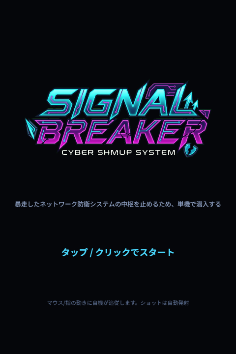
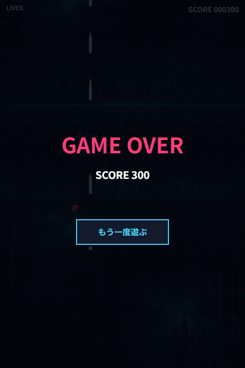
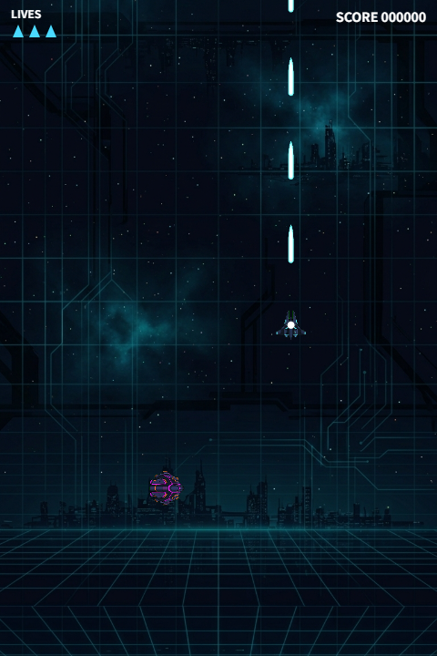

マウスを動かすと自機が追従します。ショットは自動連射なので、避けることに集中してください。
画面を指でなぞると自機が追従します。タップでゲームスタート、操作はPCと同じく自動ショットです。



「SIGNAL BREAKER」は、道中を突破してボスを倒すと1面クリアとなる短編弾幕シューティングです。道中で強化アイテムを3回入手でき、そのたびに候補から1つを選んでビルドを組み上げます。選んだ強化の組み合わせによって、ボス戦の難易度が変わります。
残機は3機、被弾後は短い無敵時間があります。1プレイ数分で遊べるので、気軽に挑戦してみてください。
今すぐ遊ぶ